Weather and atmospherics
Weather is preset-driven and exposes both renderer-side state
(RenderQualitySettings) and runtime atmospheric overrides
(WeatherSettings). When WeatherSettings::enabled = true the
atmospheric fields on WeatherSettings override the matching
RenderQualitySettings fields for that frame.
Weather presets
Presets cover Clear, Hazy, Overcast, Fog, Rain,
HeavyRain, Snow, Storm, NightClear, NightRain, and
Custom. Quality steps (Low, Medium, High, Ultra) trade
fidelity against particle and texture budgets.
WeatherSettings and RenderQualitySettings overlap on atmospheric
fields (fog density, wetness, volumetric fog, sky tinting). The precedence
rule is: when WeatherSettings::enabled = true, the renderer reads
weather fields and ignores the corresponding RenderQualitySettings
fields for that frame. When enabled = false, RenderQualitySettings
applies. Numeric units in WeatherSettings: timeOfDayHours in hours
[0, 24), latitude / longitude in degrees, windSpeed in m/s,
visibilityMeters / radius / distance-fade fields in metres,
fogDensity in metres⁻¹ (exponential extinction), fogAnisotropy is
the Henyey-Greenstein g in [-1, 1], cloudCoverage /
cloudDensity / rainOcclusionStrength / humidity / wetness
normalized in [0, 1], and wetnessAccumulationRate /
wetnessDryingRate per second.
Clear |
Overcast |
|---|---|
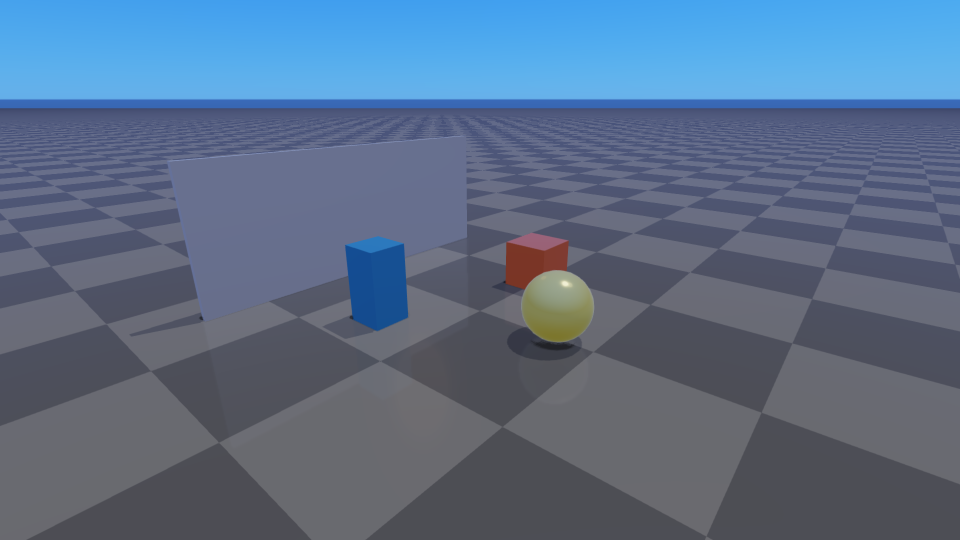 |
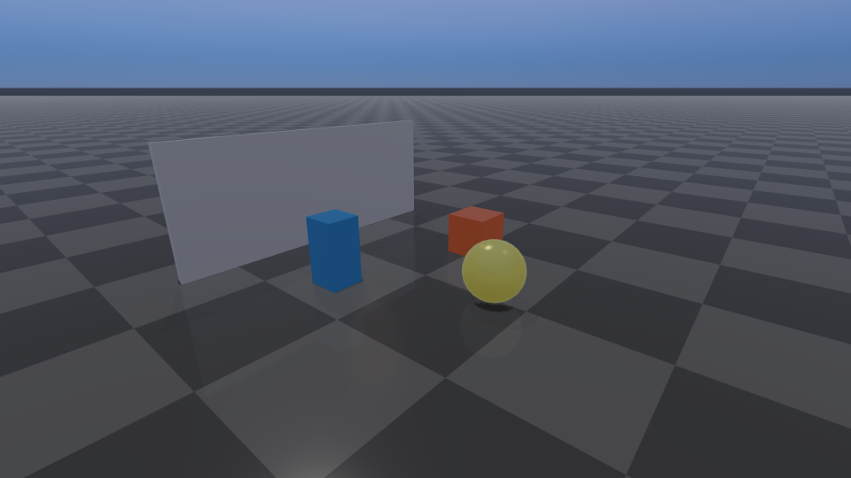 |
Rain |
Snow |
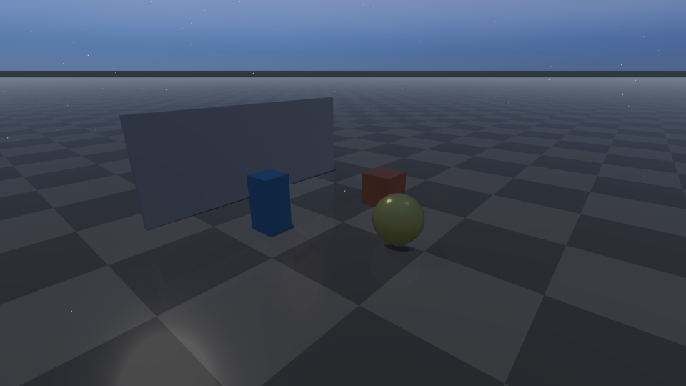 |
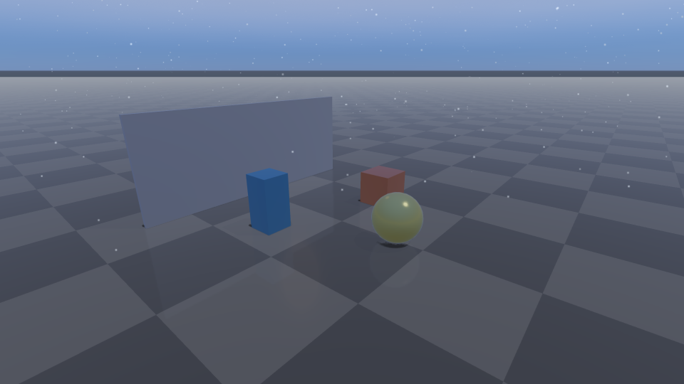 |
Storm |
NightClear |
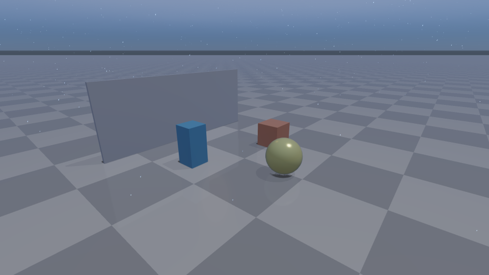 |
The grid is produced by doc_image_weather_presets in
docs/image_generators/.
Start from RayraiWindow::defaultWeatherSettings, apply it with
setWeatherSettings or setWeatherPreset, and call updateWeather
from your frame loop when the weather state should animate.
transitionWeather blends between presets or settings over a duration;
weatherDiagnostics reports the resolved sun/moon, fog, precipitation,
wetness, snow, lightning, lens-droplet, and generated sky state.
setWeatherThunderCallback fires when lightning produces a thunder event
so the application can play audio or trigger gameplay reactions.
auto weather = raisin::RayraiWindow::defaultWeatherSettings(
raisin::RayraiWindow::WeatherPreset::Rain);
weather.enabled = true;
weather.affectSensors = false;
weather.timeOfDayHours = 17.5f;
weather.windSpeed = 3.0f;
weather.lensDropletsEnabled = true;
viewer.setWeatherSettings(weather);
viewer.setWeatherThunderCallback([](const auto& event) {
// play audio at event.delaySeconds with event.intensity, etc.
});
// Frame loop animation.
viewer.updateWeather(dt);
auto diagnostics = viewer.weatherDiagnostics();
if (diagnostics.lightningActive) {
// react to the current flash
}
// Smooth blend to a new preset over four seconds.
viewer.transitionWeather(raisin::RayraiWindow::WeatherPreset::Storm, 4.0);
For local effects, use addLocalFogVolume / clearLocalFogVolumes,
addProjectedDecal / clearProjectedDecals, and
addIrradianceVolume / clearIrradianceVolumes. Each list is capped
(eight local fog volumes, eight projected decals, eight irradiance volumes)
so the fast frame path stays predictable. Weather-driven sky maps are
created on demand with
generateWeatherSkyEnvironment(envFaceSize, irradianceFaceSize,
setAsBackground); do this at transition points or setup time, not every
frame. clearWeatherSkyEnvironment releases the cubemaps.
raisin::LocalFogVolume cloud;
cloud.center = glm::vec3(0.0f, 2.0f, 1.2f);
cloud.radius = 3.0f;
cloud.density = 0.18f;
cloud.edgeFade = 0.45f;
viewer.addLocalFogVolume(cloud);
raisin::ProjectedDecal puddle;
puddle.center = glm::vec3(1.5f, -0.8f, 0.01f);
puddle.halfExtents = glm::vec3(0.8f, 0.8f, 0.05f);
puddle.color = glm::vec4(0.0f, 0.0f, 0.0f, 0.8f);
viewer.addProjectedDecal(puddle);
raisin::IrradianceVolume ambient;
ambient.center = glm::vec3(0.0f, 0.0f, 1.5f);
ambient.halfExtents = glm::vec3(4.0f, 4.0f, 2.0f);
ambient.color = glm::vec3(0.20f, 0.22f, 0.30f);
ambient.strength = 0.8f;
viewer.addIrradianceVolume(ambient);
Enabling the procedural sky and sky IBL
The procedural sky is on by default in rayrai. The struct-default for
RenderQualitySettings::proceduralSkyBackgroundEnabled is true, so
every preset (Fast / Balanced / High / Ultra) renders the analytic
Hillaire sky as the background out of the box. You do not need to do
anything to turn it on; you only need to call the helpers below if you
want it to light the scene as ambient.
Two-step recipe to get a sky that also drives shaded-side ambient:
raisin::RayraiWindow viewer(world, 1280, 720);
// 1) Pick a preset. Procedural sky is already enabled by every
// built-in preset, so no flag flip is needed.
viewer.setRenderQualityPreset(
raisin::RayraiWindow::RenderQualityPreset::High);
// 2) Bake the procedural sky into a real IBL environment cubemap +
// irradiance cubemap so PBR materials sample sky colour for
// indirect lighting. Without this call the sky is "background
// only" — PBR surfaces see no environment contribution.
viewer.generateWeatherSkyEnvironment(
/*envFaceSize=*/128,
/*irradianceFaceSize=*/32,
/*setAsBackground=*/true);
After that, RenderQualitySettings::pbrEnvironmentIntensity controls
how strong the IBL contribution is. The preset defaults are tuned for
outdoor daylight; lower it for an overcast or indoor feel.
If you want to turn the sky off (for a flat colour background or to use an HDR environment instead):
auto q = viewer.getRenderQualitySettings();
q.proceduralSkyBackgroundEnabled = false;
q.proceduralCloudLayerEnabled = false;
viewer.setRenderQualitySettings(q);
viewer.setBackgroundColorRgb255({20, 22, 32, 255}); // flat fallback
To swap in your own HDR environment (the PbrEnvironment bundle), load the HDR file, set it as the background, and the PBR shader will use it instead of the procedural sky:
auto env = raisin::PbrEnvironment::loadFromHdrFile("/path/studio.hdr");
viewer.setEnvironmentBackground(env.environmentCubemap, /*exposure=*/1.0f);
The procedural sky is cheap (a few small LUTs); the IBL bake is a one-time cost when the renderer initialises or when weather state changes substantially. Both are documented in more detail below.
Volumetric fog, sky, and light shafts
On top of the standard exponential fog (fogDensity,
fogColorOverrideEnabled, fogColor), the renderer supports height fog
(heightFogEnabled, heightFogDensity, heightFogBaseHeight,
heightFogFalloff) and a volumetric fog volume
(volumetricFogEnabled, volumetricFogDensity,
volumetricFogNoiseScale, volumetricFogNoiseStrength,
volumetricFogColor, volumetricFogAnisotropy,
volumetricFogAnimationTimeSeconds, volumetricFogWindDirection,
volumetricFogWindSpeed, volumetricFogTurbulenceSpeed).
Volumetric lighting (volumetricLightingEnabled,
volumetricLightStrength, volumetricLightDecay,
volumetricLightSamples) scatters the main light through the fog volume.
The procedural sky path uses an analytic Hillaire-style atmosphere LUT with
multi-scatter and aerial-perspective passes. Enable it with
proceduralSkyBackgroundEnabled and tune sun visibility
(proceduralSkySunStrength, proceduralSkySunSize). A separate
procedural cloud layer adds proceduralCloudLayerEnabled,
proceduralCloudCoverage, proceduralCloudDensity,
proceduralCloudScale, proceduralCloudSoftness,
proceduralCloudOffset, proceduralCloudTint; cloud shadows
(cloudShadowProjectionEnabled, cloudShadowStrength,
cloudShadowScale) project that layer back onto the scene.
auto quality = viewer.getRenderQualitySettings();
// Height fog on top of the standard exponential fog.
quality.fogDensity = 0.015f;
quality.heightFogEnabled = true;
quality.heightFogDensity = 0.04f;
quality.heightFogBaseHeight = 0.0f;
quality.heightFogFalloff = 0.35f;
// Animated volumetric fog with subtle wind.
quality.volumetricFogEnabled = true;
quality.volumetricFogDensity = 0.018f;
quality.volumetricFogColor = glm::vec3(0.74f, 0.82f, 0.92f);
quality.volumetricFogAnisotropy = 0.30f;
quality.volumetricFogWindDirection = glm::vec2(1.0f, 0.0f);
quality.volumetricFogWindSpeed = 0.6f;
quality.volumetricFogAnimationTimeSeconds = currentTimeSeconds;
// Light shafts from the main directional light.
quality.volumetricLightingEnabled = true;
quality.volumetricLightStrength = 0.6f;
quality.volumetricLightDecay = 0.94f;
quality.volumetricLightSamples = 32;
quality.lightShaftsEnabled = true;
quality.lightShaftsStrength = 0.8f;
// Procedural sky + clouds.
quality.proceduralSkyBackgroundEnabled = true;
quality.proceduralSkySunStrength = 1.4f;
quality.proceduralCloudLayerEnabled = true;
quality.proceduralCloudCoverage = 0.55f;
quality.cloudShadowProjectionEnabled = true;
quality.cloudShadowStrength = 0.35f;
viewer.setRenderQualitySettings(quality);
{kind=link}
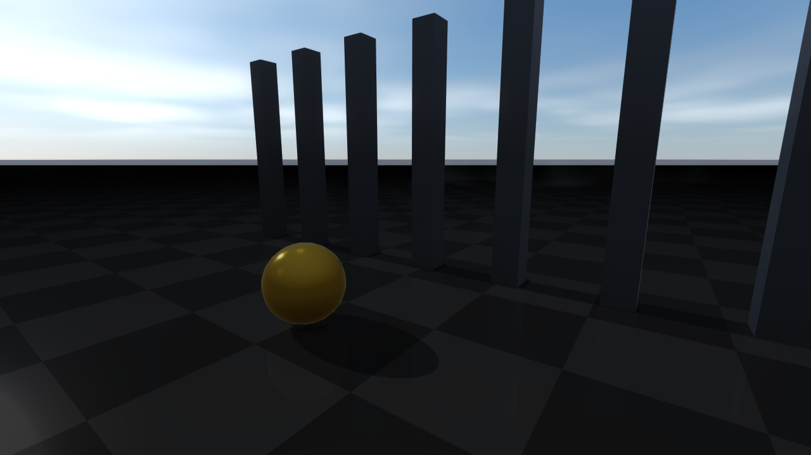
Sky and height fog |
Volumetric fog + light shafts |
|---|---|
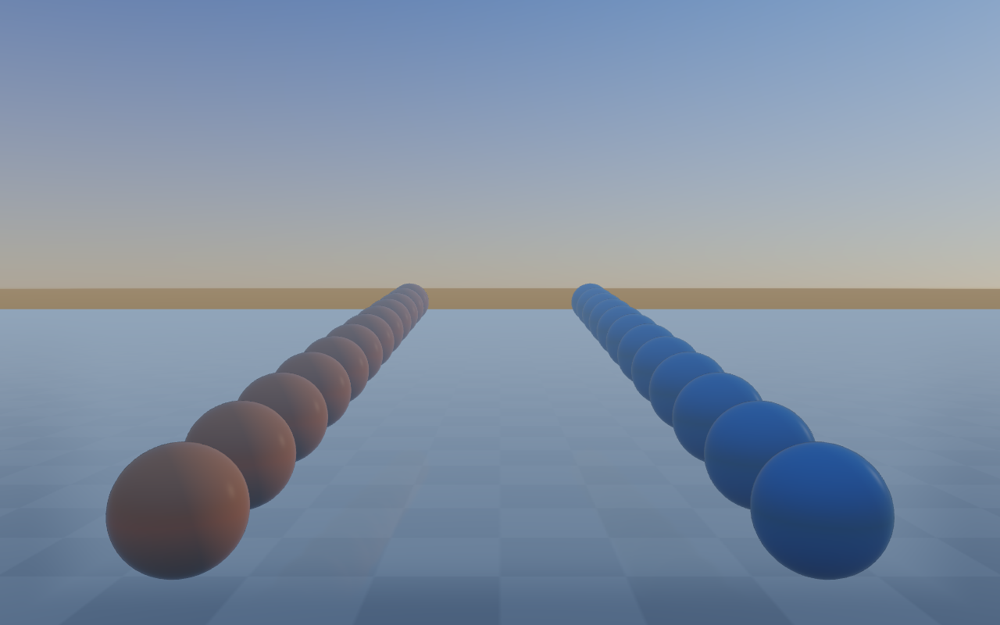 |
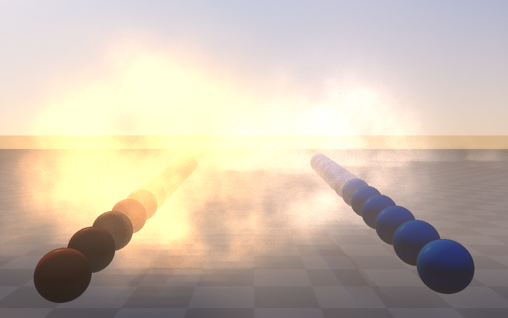 |
Cloud shadows |
Aerial perspective |
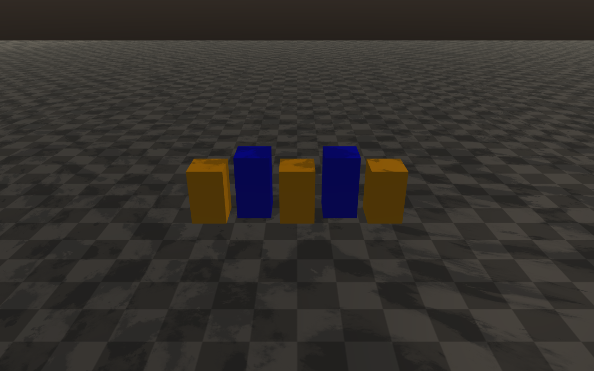 |
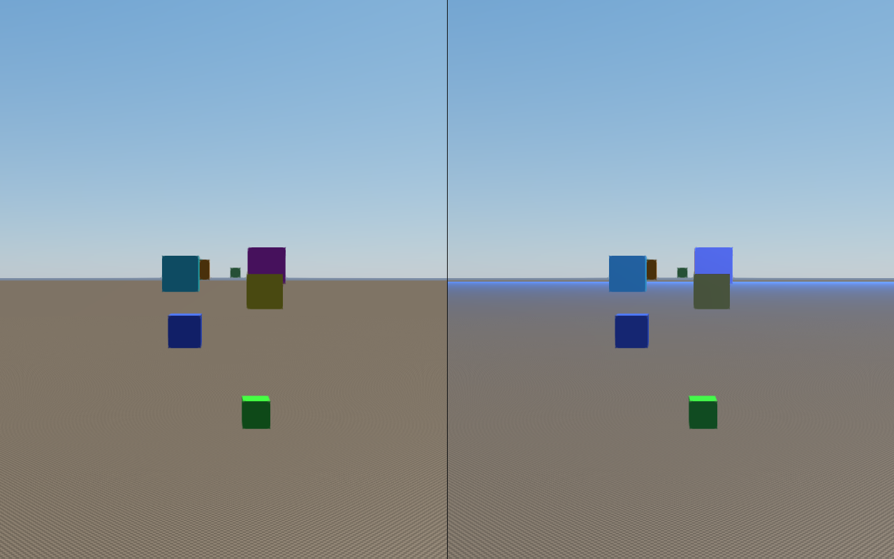 |
Local fog volumes |
Light shafts (god rays) |
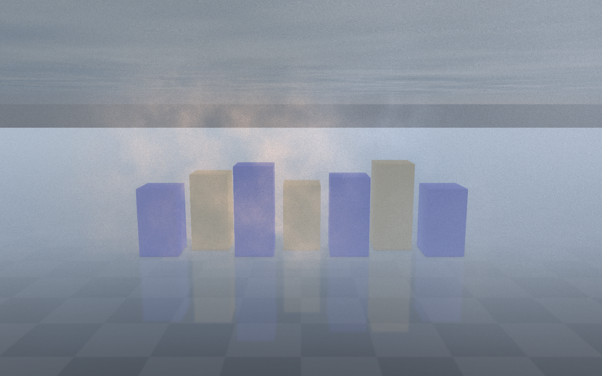 |
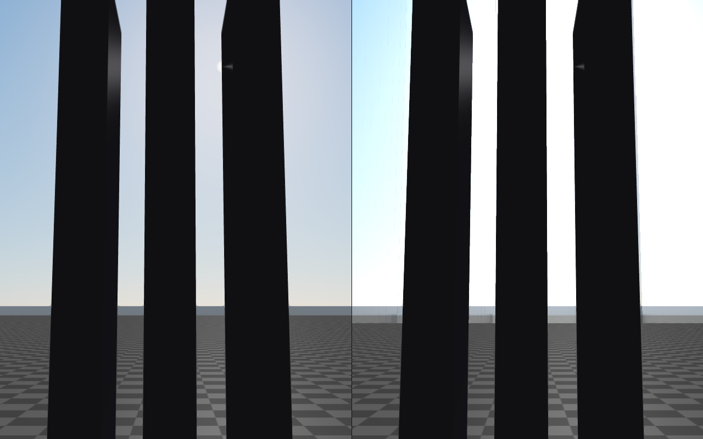 |
Foliage wind
Authored foliage and instanced grass deform under a global wind field when
foliageWindEnabled is set. foliageWindDirection and
foliageWindSpeed drive the base motion; foliageWindTimeSeconds is
the wind clock the application drives from its frame loop.
foliageWindGustStrength and foliageWindGustScale add slower gust
noise on top, while foliageWindBranchBend controls coarse trunk/branch
bend and foliageWindLeafFlutter controls fine leaf flutter. The
per-mesh response amplitude comes from the material’s FoliageType and
the vertex color channels populated by the importer.
Foliage uses two-sided lighting and weather-driven leaf colour shifts.
Grass patches and dense bushes are usually rendered through
InstancedVisuals so thousands of blades share one upload, with
per-instance scale and rotation driving subtle variation.
auto quality = viewer.getRenderQualitySettings();
quality.foliageWindEnabled = true;
quality.foliageWindDirection = glm::vec2(0.7f, 0.7f); // diagonal wind
quality.foliageWindSpeed = 2.4f; // base m/s
quality.foliageWindTimeSeconds = currentTimeSeconds; // animation clock
quality.foliageWindGustStrength = 0.6f; // gust amplitude
quality.foliageWindGustScale = 1.2f; // gust spatial scale
quality.foliageWindBranchBend = 0.22f; // coarse trunk bend
quality.foliageWindLeafFlutter = 0.10f; // fine flutter
viewer.setRenderQualitySettings(quality);
// Mark a material as foliage so the wind shader applies to it.
auto leaf = raisin::Material::foliage(
"oak_leaves", raisin::Material::FoliageType::LeafCard,
glm::vec4(0.32f, 0.55f, 0.21f, 1.0f));
Foliage wind (poster frame) |
Leaf two-sided lighting |
|---|---|
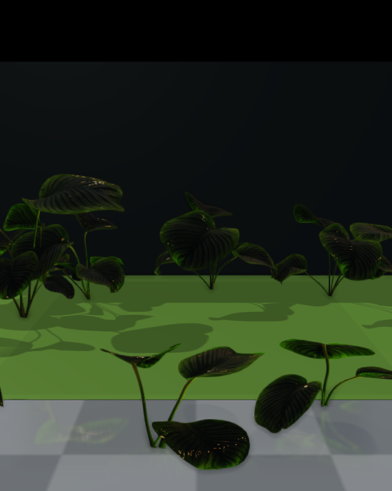 |
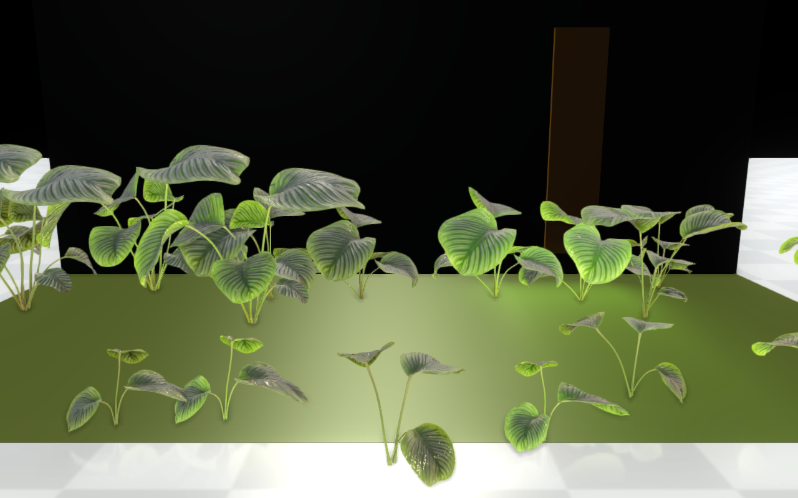 |
Dense grass patch |
Foliage weather response |
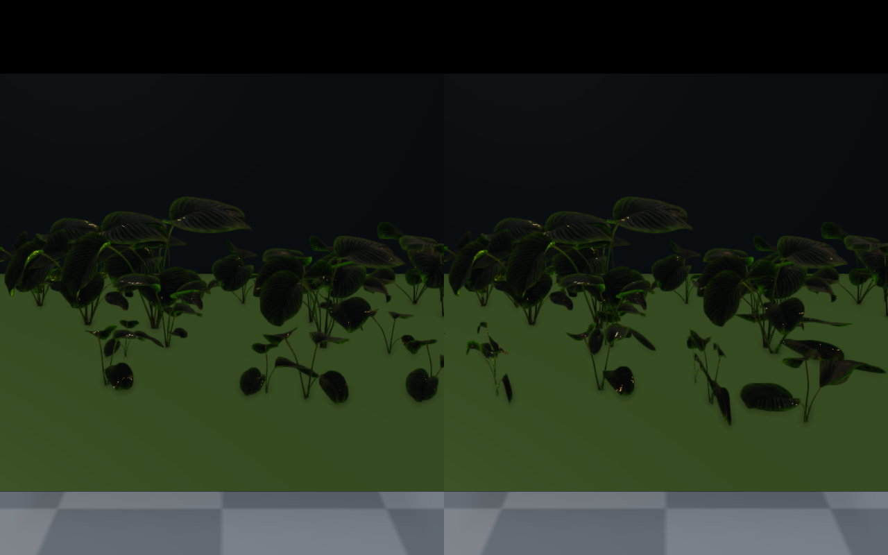 |
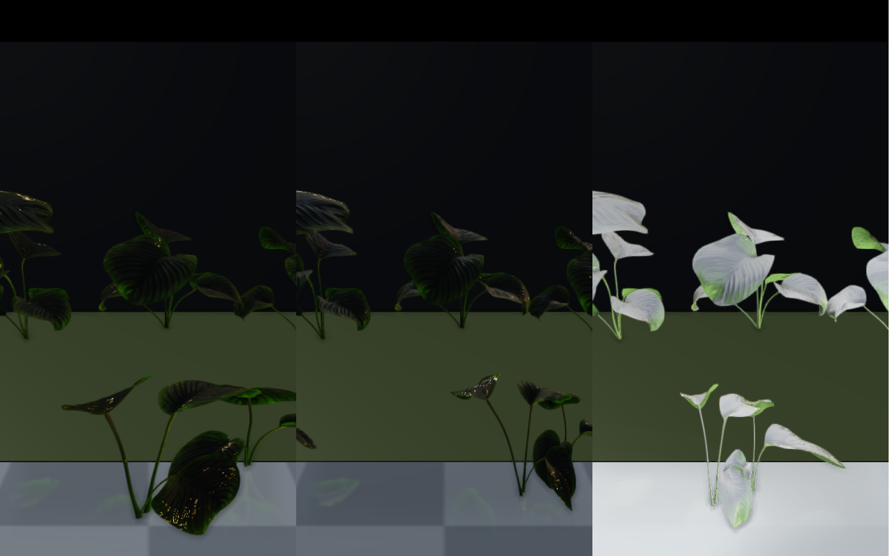 |
Dense foliage instancing |
Poly Haven foliage import |
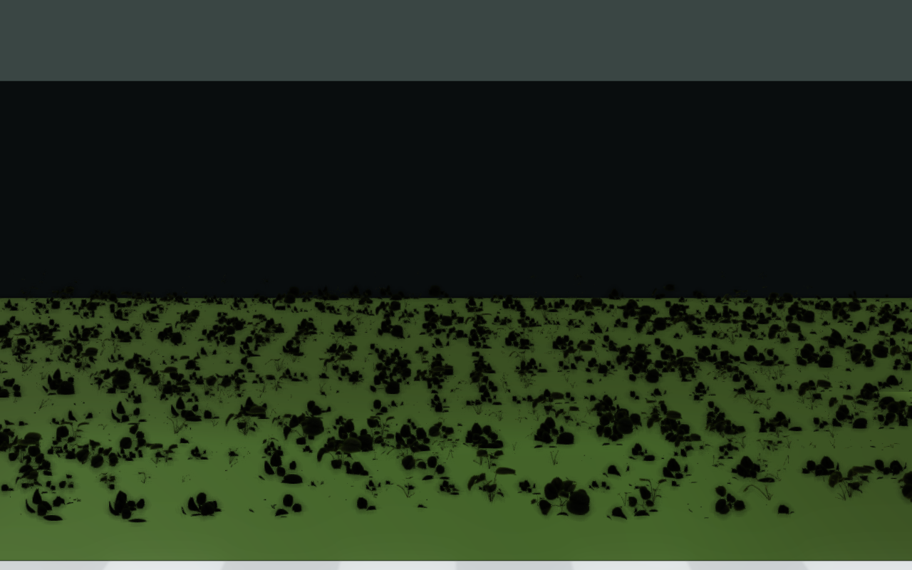 |
Weather wet and snow material response
Wet and snow surface response is decoupled from precipitation so applications
can ramp it independently of the weather state. Enable
weatherWetMaterialEnabled and drive it through weatherWetness,
weatherPuddleStrength, weatherRainRippleStrength,
weatherRainRippleScale, weatherRainRipplePhase,
weatherWetAlbedoDarkening, weatherWetRoughnessScale, and
weatherWetSpecularBoost. Snow response uses
weatherSnowMaterialEnabled plus weatherSnowCoverage,
weatherSnowAccumulationStrength, weatherSnowAlbedoBlend,
weatherSnowRoughness, weatherSnowMetallicScale, and
weatherSnowNormalSoftening. The WeatherMask texture slot on
Material masks these effects per-asset, so authored awnings or
undersides of overhangs stay dry.
Wet response darkens albedo, drops roughness, and adds animated rain
ripples on upward-facing surfaces; wetnessAccumulationEnabled lets the
value ramp up over time during rain and ramp back down during dry intervals,
controlled by wetnessAccumulationRate and wetnessDryingRate.
auto quality = viewer.getRenderQualitySettings();
// Wet material response (puddles, rain ripples, darkening).
quality.weatherWetMaterialEnabled = true;
quality.weatherWetness = 0.7f; // 0..1
quality.weatherPuddleStrength = 0.5f;
quality.weatherRainRippleStrength = 0.45f;
quality.weatherRainRippleScale = 18.0f;
quality.weatherWetAlbedoDarkening = 0.30f;
quality.weatherWetRoughnessScale = 0.32f;
quality.weatherWetSpecularBoost = 0.40f;
// Snow material response (albedo blend on upward faces).
quality.weatherSnowMaterialEnabled = true;
quality.weatherSnowCoverage = 0.65f; // 0..1
quality.weatherSnowAccumulationStrength = 0.8f;
quality.weatherSnowAlbedoBlend = 0.78f;
quality.weatherSnowRoughness = 0.92f;
quality.weatherSnowMetallicScale = 0.05f;
quality.weatherSnowNormalSoftening = 0.62f;
viewer.setRenderQualitySettings(quality);
// Optional: drive accumulation/drying from the weather state instead.
auto weather = viewer.getWeatherSettings();
weather.wetnessAccumulationEnabled = true;
weather.wetnessAccumulationRate = 0.35f; // per second
weather.wetnessDryingRate = 0.10f; // per second
viewer.setWeatherSettings(weather);
{kind=link}
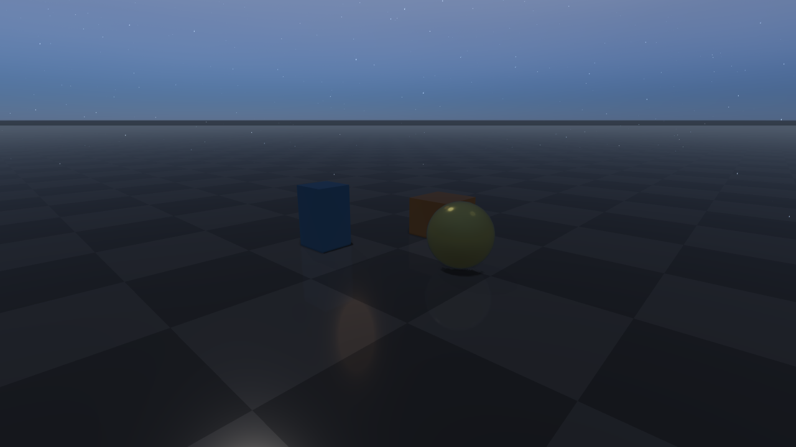
Wet material response |
Snow material response |
|---|---|
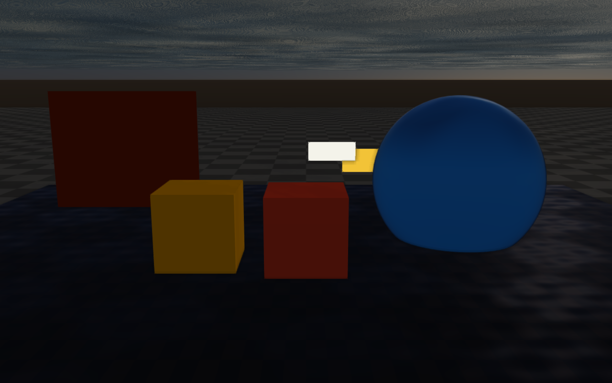 |
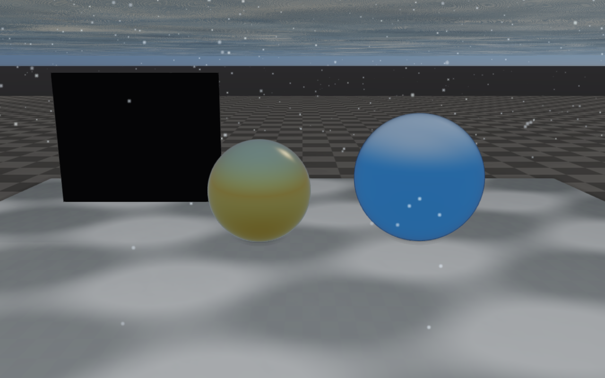 |
Wetness accumulation |
Snow melt transition |
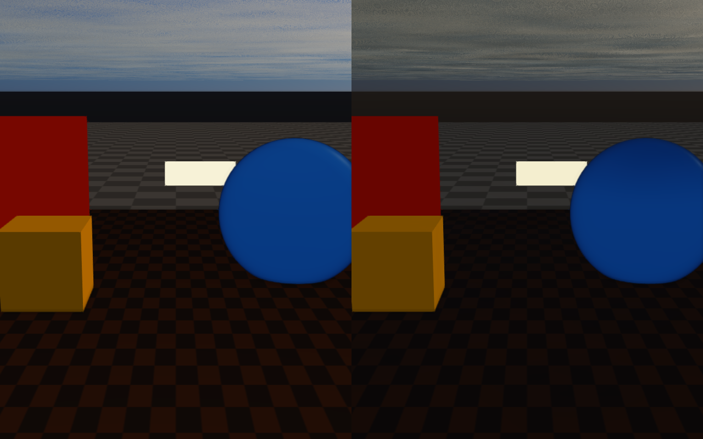 |
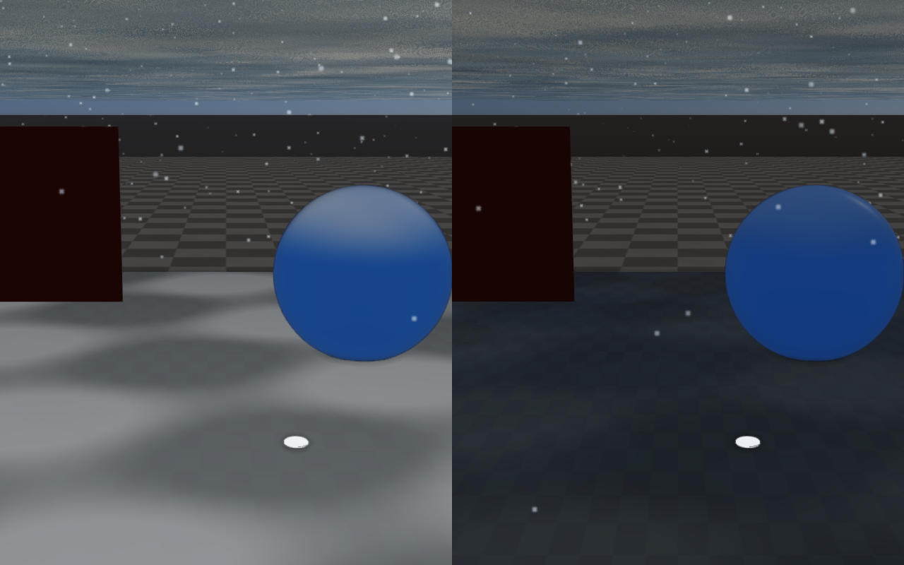 |
Rain splashes, snow flurries, lens droplets, and storm lightning
Rain and snow generate animated particle systems on top of the material
response. Rain splashes are short-lived secondary impact particles spawned
on upward-facing surfaces; their density follows precipitationRate.
Lens droplets render screen-space droplets on the lens (controllable via
lensDropletsEnabled and lensDropletStrength). Derived droplet count,
maximum pixel size, and alpha are reported by WeatherDiagnostics rather
than configured independently. Storms add stochastic lightning controlled by
lightningRate and the lightningLocalPoint* fields; subscribe with
setWeatherThunderCallback to play audio cues. Solar position uses the
configured latitude / longitude / date and shifts the directional light
accordingly throughout timeOfDayHours.
auto weather = raisin::RayraiWindow::defaultWeatherSettings(
raisin::RayraiWindow::WeatherPreset::Storm);
weather.enabled = true;
weather.precipitationRate = 12.0f; // conceptual mm/hr
weather.rainOcclusionStrength = 0.6f; // 0..1
weather.cloudCoverage = 0.95f;
weather.lightningRate = 0.15f; // events per second (Poisson)
weather.lightningLocalPointLightEnabled = true;
weather.lensDropletsEnabled = true;
weather.timeOfDayHours = 17.0f;
weather.latitude = 37.0f;
weather.longitude = 127.0f;
weather.year = 2026; weather.month = 5; weather.day = 23;
viewer.setWeatherSettings(weather);
viewer.setWeatherThunderCallback([](const auto& event) {
audio.playThunder(event.delaySeconds, event.intensity);
});
Rain splashes |
Lens droplets |
|---|---|
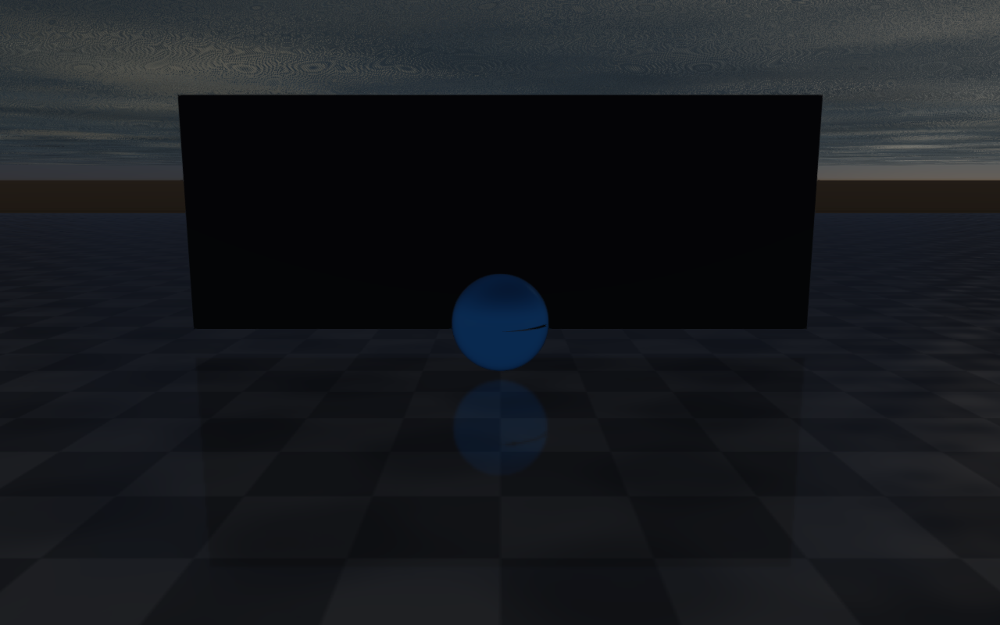 |
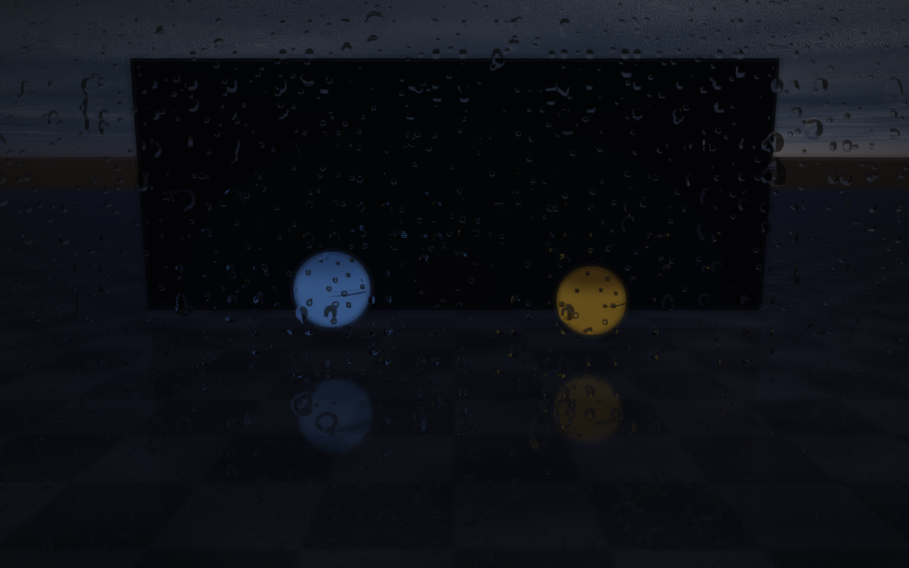 |
Snow particles |
Storm lightning |
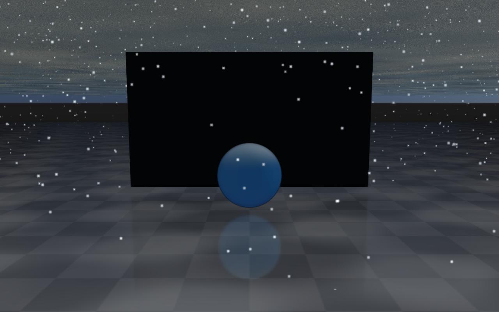 |
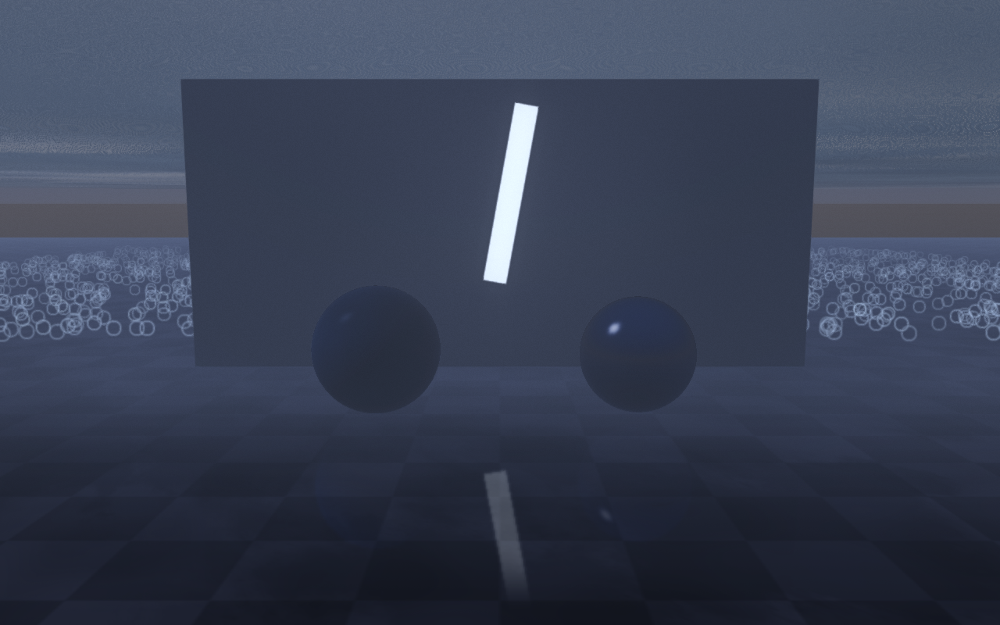 |
Rain occlusion |
Solar position over time of day |
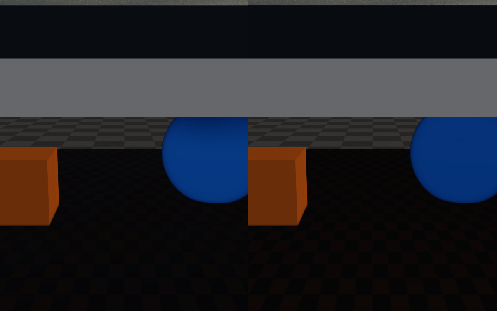 |
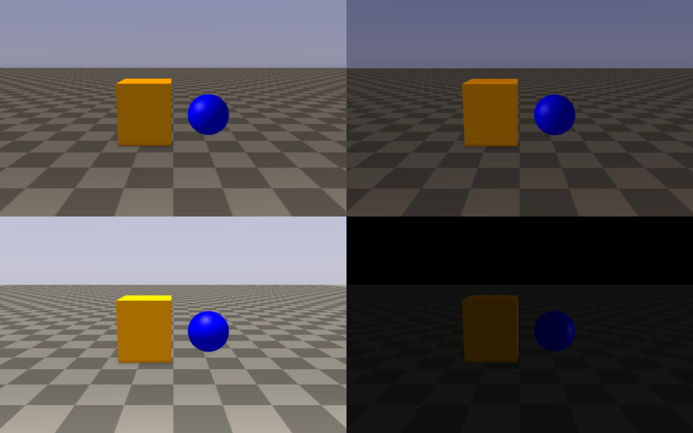 |